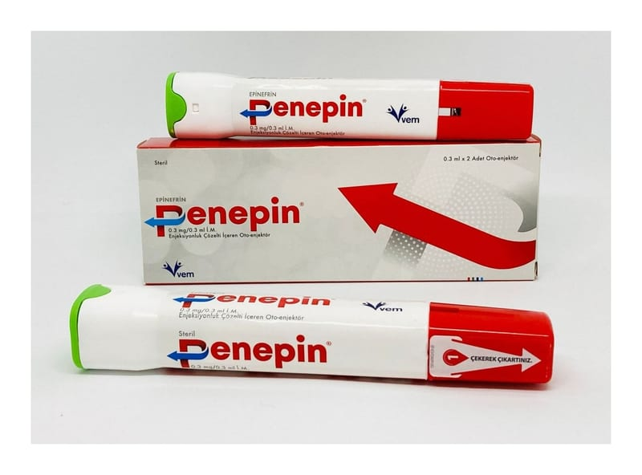

Penepin 0.3 mg/0.3 ml I.M. Enjeksiyonluk Çözelti İçeren Oto Enjektör, 2 Adet

Ne için kullanılır
KT · Bölüm 1PENEPİN uyluk kasının dış kısmına (kas içine enjeksiyon) acil enjeksiyon için steril bir epinefrin çözeltisi içerir. PENEPİN böcek sokmalarına veya ısırıklarına, yiyeceklere veya ilaçlara veya egzersize bağlı, hayatı tehdit eden şiddetli alerjik reaksiyonların (anafilaktik şok) acil tedavisi için kullanılır. Reaksiyon, vücudun, bazı kimyasalların kan dolaşımına geçmesini sağlayarak kendisini alerjenden (alerjiye neden olan yabancı madde) korumaya çalışmasının sonucudur. Bazen alerjik reaksiyonun nedeni bilinmemektedir.
Bu ilacı kullanmaya başlamadan önce KULLANMA TALİMATINI dikkatlice okuyunuz, çünkü sizin için önemli bilgiler içermektedir. • Bu kullanma talimatını saklayınız. Daha sonra tekrar okumaya ihtiyaç duyabilirsiniz. • Eğer ilave sorularınız olursa, lütfen doktorunuza veya eczacınıza danışınız. • Bu ilaç kişisel olarak sizin için reçete edilmiştir, başkalarına vermeyiniz. • Bu ilacın kullanımı sırasında, doktora veya hastaneye gittiğinizde doktorunuza bu ilacı kullandığınızı söyleyiniz. • Bu talimatta yazılanlara aynen uyunuz. İlaç hakkında size önerilen dozun dışında yüksek veya düşük doz kullanmayınız.
Anafilaktik şokun başlangıcını gösteren belirtiler, alerjene maruz kaldıktan birkaç dakika sonra ortaya çıkar ve şunları içermektedir: cildin kaşınması; kızarıklık (ısırgan döküntüsü gibi); ateş basması; dudakların, boğazın, dilin, ellerin ve ayakların şişmesi; hırıltı; ses kısıklığı; nefes darlığı; mide bulantısı; kusma; mide krampları ve bazı durumlarda bilinç kaybı.
Otomatik enjektördeki ilaç, adrenerjik (düz kaslarda kasılmaya neden olan) bir ilaç olan epinefrindir. Doğrudan kardiyovasküler (kalp ve dolaşım) sistem ve solunum (akciğer) sistemi üzerinde çalışarak, anafilaktik şokun olası ölümcül etkilerini durdurmak için kan damarlarını çok hızlı bir şekilde daraltır, akciğerlerdeki kasları gevşeterek nefes almayı iyileştirir, şişmeyi azaltır ve kalp atışını uyarır.
PENEPİN, anafilaktik şok geçmişi olan veya anafilaktik şoka girme riski bulunan bir kişi tarafından kendi kendine uygulama amaçlıdır. Risk altındaysanız, PENEPİN’inizi daima yanınızda bulundurmalısınız. PENEPİN, acil bir ilk yardım tedavisi olarak tasarlanmıştır ancak kullanımından sonra mümkün olan en kısa sürede tıbbi yardım almalısınız.